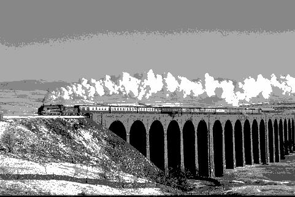
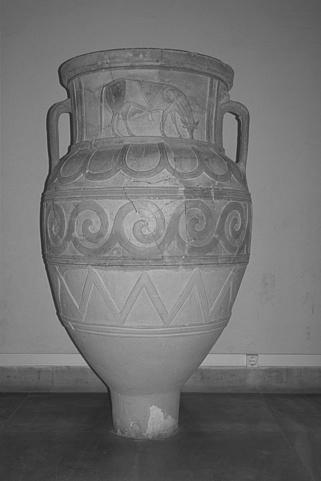
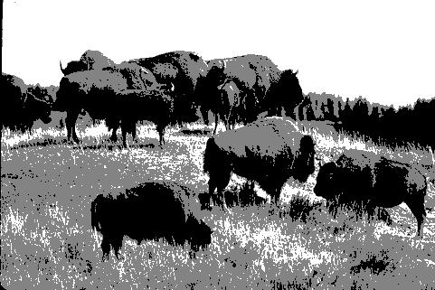
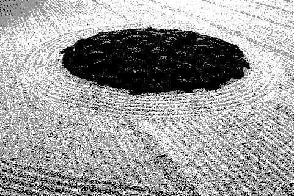

Pratical Work - Segmentation
| Original Image | K-means++ - 3 clusters | Otsu's - 3 thresholds | K-means++ - 5 clusters | Otsu's - 5 thresholds |
|---|---|---|---|---|
 |
 Time taken to segment: 1.788 seconds Time taken to segment: 1.788 seconds MeanStructuralSimilitaryIndex: 0.55 MeanSquaredError: 3304.50 PeakSignalNoiseRatio: 12.94 |
 Time taken to segment: 0.034 seconds Time taken to segment: 0.034 seconds MeanStructuralSimilitaryIndex: 0.52 MeanSquaredError: 2858.32 PeakSignalNoiseRatio: 13.57 |
 Time taken to segment: 1.862 seconds Time taken to segment: 1.862 seconds MeanStructuralSimilitaryIndex: 0.76 MeanSquaredError: 996.10 PeakSignalNoiseRatio: 18.15 |
 Time taken to segment: 7.557 seconds Time taken to segment: 7.557 seconds MeanStructuralSimilitaryIndex: 0.68 MeanSquaredError: 825.42 PeakSignalNoiseRatio: 18.96 |
 |
 Time taken to segment: 2.300 seconds Time taken to segment: 2.300 seconds MeanStructuralSimilitaryIndex: 0.35 MeanSquaredError: 2535.11 PeakSignalNoiseRatio: 14.09 |
 Time taken to segment: 0.035 seconds Time taken to segment: 0.035 seconds MeanStructuralSimilitaryIndex: 0.29 MeanSquaredError: 2868.60 PeakSignalNoiseRatio: 13.55 |
 Time taken to segment: 2.643 seconds Time taken to segment: 2.643 seconds MeanStructuralSimilitaryIndex: 0.57 MeanSquaredError: 1214.83 PeakSignalNoiseRatio: 17.29 |
 Time taken to segment: 6.977 seconds Time taken to segment: 6.977 seconds MeanStructuralSimilitaryIndex: 0.51 MeanSquaredError: 1338.60 PeakSignalNoiseRatio: 16.86 |
 |
 Time taken to segment: 1.313 seconds Time taken to segment: 1.313 seconds MeanStructuralSimilitaryIndex: 0.55 MeanSquaredError: 2331.10 PeakSignalNoiseRatio: 14.46 |
 Time taken to segment: 0.022 seconds Time taken to segment: 0.022 seconds MeanStructuralSimilitaryIndex: 0.44 MeanSquaredError: 3165.09 PeakSignalNoiseRatio: 13.13 |
 Time taken to segment: 2.819 seconds Time taken to segment: 2.819 seconds MeanStructuralSimilitaryIndex: 0.71 MeanSquaredError: 591.33 PeakSignalNoiseRatio: 20.41 |
 Time taken to segment: 7.179 seconds Time taken to segment: 7.179 seconds MeanStructuralSimilitaryIndex: 0.59 MeanSquaredError: 841.58 PeakSignalNoiseRatio: 18.88 |
 |
 Time taken to segment: 0.834 seconds Time taken to segment: 0.834 seconds MeanStructuralSimilitaryIndex: 0.48 MeanSquaredError: 2276.60 PeakSignalNoiseRatio: 14.56 |
 Time taken to segment: 0.015 seconds Time taken to segment: 0.015 seconds MeanStructuralSimilitaryIndex: 0.44 MeanSquaredError: 1807.47 PeakSignalNoiseRatio: 15.56 |
 Time taken to segment: 1.857 seconds Time taken to segment: 1.857 seconds MeanStructuralSimilitaryIndex: 0.68 MeanSquaredError: 957.73 PeakSignalNoiseRatio: 18.32 |
 Time taken to segment: 7.307 seconds Time taken to segment: 7.307 seconds MeanStructuralSimilitaryIndex: 0.66 MeanSquaredError: 1043.00 PeakSignalNoiseRatio: 17.95 |
 |
 Time taken to segment: 1.043 seconds Time taken to segment: 1.043 seconds MeanStructuralSimilitaryIndex: 0.44 MeanSquaredError: 1234.84 PeakSignalNoiseRatio: 17.21 |
 Time taken to segment: 0.020 seconds Time taken to segment: 0.020 seconds MeanStructuralSimilitaryIndex: 0.36 MeanSquaredError: 1281.32 PeakSignalNoiseRatio: 17.05 |
 Time taken to segment: 2.223 seconds Time taken to segment: 2.223 seconds MeanStructuralSimilitaryIndex: 0.60 MeanSquaredError: 592.13 PeakSignalNoiseRatio: 20.41 |
 Time taken to segment: 6.823 seconds Time taken to segment: 6.823 seconds MeanStructuralSimilitaryIndex: 0.46 MeanSquaredError: 974.46 PeakSignalNoiseRatio: 18.24 |
 Time taken to segment: 1.051 seconds Time taken to segment: 1.051 seconds MeanStructuralSimilitaryIndex: 0.71 MeanSquaredError: 1080.76 PeakSignalNoiseRatio: 17.79 |
 Time taken to segment: 0.021 seconds Time taken to segment: 0.021 seconds MeanStructuralSimilitaryIndex: 0.61 MeanSquaredError: 1396.36 PeakSignalNoiseRatio: 16.68 |
Time taken to segment: 1.991 seconds MeanStructuralSimilitaryIndex: 0.80 MeanSquaredError: 425.18 PeakSignalNoiseRatio: 21.85 |
 Time taken to segment: 7.055 seconds Time taken to segment: 7.055 seconds MeanStructuralSimilitaryIndex: 0.69 MeanSquaredError: 1047.20 PeakSignalNoiseRatio: 17.93 |
|
|  |  Time taken to segment: 1.135 seconds Time taken to segment: 1.135 seconds MeanStructuralSimilitaryIndex: 0.46 MeanSquaredError: 7091.14 PeakSignalNoiseRatio: 9.62 |
 Time taken to segment: 0.034 seconds Time taken to segment: 0.034 seconds MeanStructuralSimilitaryIndex: 0.47 MeanSquaredError: 6683.47 PeakSignalNoiseRatio: 9.88 |
 Time taken to segment: 1.772 seconds Time taken to segment: 1.772 seconds MeanStructuralSimilitaryIndex: 0.54 MeanSquaredError: 2843.20 PeakSignalNoiseRatio: 13.59 |
 Time taken to segment: 6.346 seconds Time taken to segment: 6.346 seconds MeanStructuralSimilitaryIndex: 0.53 MeanSquaredError: 2640.70 PeakSignalNoiseRatio: 13.91 |
 |
 Time taken to segment: 1.234 seconds Time taken to segment: 1.234 seconds MeanStructuralSimilitaryIndex: 0.44 MeanSquaredError: 3144.14 PeakSignalNoiseRatio: 13.16 |
 Time taken to segment: 0.014 seconds Time taken to segment: 0.014 seconds MeanStructuralSimilitaryIndex: 0.37 MeanSquaredError: 3223.83 PeakSignalNoiseRatio: 13.05 |
 Time taken to segment: 2.360 seconds Time taken to segment: 2.360 seconds MeanStructuralSimilitaryIndex: 0.70 MeanSquaredError: 781.57 PeakSignalNoiseRatio: 19.20 |
 Time taken to segment: 6.881 seconds Time taken to segment: 6.881 seconds MeanStructuralSimilitaryIndex: 0.49 MeanSquaredError: 1939.96 PeakSignalNoiseRatio: 15.25 |
 |
 Time taken to segment: 1.105 seconds Time taken to segment: 1.105 seconds MeanStructuralSimilitaryIndex: 0.45 MeanSquaredError: 3491.93 PeakSignalNoiseRatio: 12.70 |
 Time taken to segment: 0.024 seconds Time taken to segment: 0.024 seconds MeanStructuralSimilitaryIndex: 0.41 MeanSquaredError: 2547.01 PeakSignalNoiseRatio: 14.07 |
 Time taken to segment: 2.242 seconds Time taken to segment: 2.242 seconds MeanStructuralSimilitaryIndex: 0.59 MeanSquaredError: 2630.04 PeakSignalNoiseRatio: 13.93 |
 Time taken to segment: 6.584 seconds Time taken to segment: 6.584 seconds MeanStructuralSimilitaryIndex: 0.50 MeanSquaredError: 1737.49 PeakSignalNoiseRatio: 15.73 |
 |
 Time taken to segment: 1.754 seconds Time taken to segment: 1.754 seconds MeanStructuralSimilitaryIndex: 0.33 MeanSquaredError: 2817.09 PeakSignalNoiseRatio: 13.63 |
 Time taken to segment: 0.016 seconds Time taken to segment: 0.016 seconds MeanStructuralSimilitaryIndex: 0.26 MeanSquaredError: 2992.76 PeakSignalNoiseRatio: 13.37 |
 Time taken to segment: 2.101 seconds Time taken to segment: 2.101 seconds MeanStructuralSimilitaryIndex: 0.50 MeanSquaredError: 1810.40 PeakSignalNoiseRatio: 15.55 |
 Time taken to segment: 6.945 seconds Time taken to segment: 6.945 seconds MeanStructuralSimilitaryIndex: 0.45 MeanSquaredError: 1522.85 PeakSignalNoiseRatio: 16.30 |
 |
 Time taken to segment: 1.130 seconds Time taken to segment: 1.130 seconds MeanStructuralSimilitaryIndex: 0.45 MeanSquaredError: 4725.44 PeakSignalNoiseRatio: 11.39 |
 Time taken to segment: 0.014 seconds Time taken to segment: 0.014 seconds MeanStructuralSimilitaryIndex: 0.39 MeanSquaredError: 5079.67 PeakSignalNoiseRatio: 11.07 |
 Time taken to segment: 1.667 seconds Time taken to segment: 1.667 seconds MeanStructuralSimilitaryIndex: 0.62 MeanSquaredError: 1647.55 PeakSignalNoiseRatio: 15.96 |
 Time taken to segment: 6.135 seconds Time taken to segment: 6.135 seconds MeanStructuralSimilitaryIndex: 0.55 MeanSquaredError: 2603.39 PeakSignalNoiseRatio: 13.98 |
 |
 Time taken to segment: 1.198 seconds Time taken to segment: 1.198 seconds MeanStructuralSimilitaryIndex: 0.44 MeanSquaredError: 4771.69 PeakSignalNoiseRatio: 11.34 |
 Time taken to segment: 0.015 seconds Time taken to segment: 0.015 seconds MeanStructuralSimilitaryIndex: 0.39 MeanSquaredError: 5186.05 PeakSignalNoiseRatio: 10.98 |
 Time taken to segment: 1.774 seconds Time taken to segment: 1.774 seconds MeanStructuralSimilitaryIndex: 0.57 MeanSquaredError: 2277.03 PeakSignalNoiseRatio: 14.56 |
 Time taken to segment: 6.905 seconds Time taken to segment: 6.905 seconds MeanStructuralSimilitaryIndex: 0.53 MeanSquaredError: 2469.31 PeakSignalNoiseRatio: 14.21 |
 |
 Time taken to segment: 1.339 seconds Time taken to segment: 1.339 seconds MeanStructuralSimilitaryIndex: 0.47 MeanSquaredError: 2345.23 PeakSignalNoiseRatio: 14.43 |
 Time taken to segment: 0.017 seconds Time taken to segment: 0.017 seconds MeanStructuralSimilitaryIndex: 0.37 MeanSquaredError: 3312.33 PeakSignalNoiseRatio: 12.93 |
 Time taken to segment: 1.992 seconds Time taken to segment: 1.992 seconds MeanStructuralSimilitaryIndex: 0.73 MeanSquaredError: 636.02 PeakSignalNoiseRatio: 20.10 |
 Time taken to segment: 6.093 seconds Time taken to segment: 6.093 seconds MeanStructuralSimilitaryIndex: 0.59 MeanSquaredError: 1583.56 PeakSignalNoiseRatio: 16.13 |
 Time taken to segment: 0.981 seconds Time taken to segment: 0.981 seconds MeanStructuralSimilitaryIndex: 0.67 MeanSquaredError: 12285.15 PeakSignalNoiseRatio: 7.24 |
 Time taken to segment: 0.016 seconds Time taken to segment: 0.016 seconds MeanStructuralSimilitaryIndex: 0.70 MeanSquaredError: 10661.68 PeakSignalNoiseRatio: 7.85 |
Time taken to segment: 1.533 seconds MeanStructuralSimilitaryIndex: 0.65 MeanSquaredError: 9061.15 PeakSignalNoiseRatio: 8.56 |
 Time taken to segment: 6.885 seconds Time taken to segment: 6.885 seconds MeanStructuralSimilitaryIndex: 0.67 MeanSquaredError: 6018.87 PeakSignalNoiseRatio: 10.34 |
|
 |
Time taken to segment: 1.059 seconds MeanStructuralSimilitaryIndex: 0.52 MeanSquaredError: 1896.01 PeakSignalNoiseRatio: 15.35 |
 Time taken to segment: 0.027 seconds Time taken to segment: 0.027 seconds MeanStructuralSimilitaryIndex: 0.42 MeanSquaredError: 2081.28 PeakSignalNoiseRatio: 14.95 |
 Time taken to segment: 2.056 seconds Time taken to segment: 2.056 seconds MeanStructuralSimilitaryIndex: 0.72 MeanSquaredError: 728.64 PeakSignalNoiseRatio: 19.51 |
 Time taken to segment: 6.158 seconds Time taken to segment: 6.158 seconds MeanStructuralSimilitaryIndex: 0.59 MeanSquaredError: 916.66 PeakSignalNoiseRatio: 18.51 |
 |
 Time taken to segment: 1.138 seconds Time taken to segment: 1.138 seconds MeanStructuralSimilitaryIndex: 0.81 MeanSquaredError: 3068.37 PeakSignalNoiseRatio: 13.26 |
 Time taken to segment: 0.020 seconds Time taken to segment: 0.020 seconds MeanStructuralSimilitaryIndex: 0.79 MeanSquaredError: 3072.93 PeakSignalNoiseRatio: 13.26 |
 Time taken to segment: 1.859 seconds Time taken to segment: 1.859 seconds MeanStructuralSimilitaryIndex: 0.83 MeanSquaredError: 2451.68 PeakSignalNoiseRatio: 14.24 |
 Time taken to segment: 6.638 seconds Time taken to segment: 6.638 seconds MeanStructuralSimilitaryIndex: 0.81 MeanSquaredError: 2340.02 PeakSignalNoiseRatio: 14.44 |
 |
 Time taken to segment: 0.916 seconds Time taken to segment: 0.916 seconds MeanStructuralSimilitaryIndex: 0.41 MeanSquaredError: 1765.92 PeakSignalNoiseRatio: 15.66 |
 Time taken to segment: 0.014 seconds Time taken to segment: 0.014 seconds MeanStructuralSimilitaryIndex: 0.31 MeanSquaredError: 1920.15 PeakSignalNoiseRatio: 15.30 |
Time taken to segment: 1.862 seconds MeanStructuralSimilitaryIndex: 0.51 MeanSquaredError: 1353.25 PeakSignalNoiseRatio: 16.82 |
 Time taken to segment: 6.526 seconds Time taken to segment: 6.526 seconds MeanStructuralSimilitaryIndex: 0.41 MeanSquaredError: 1477.38 PeakSignalNoiseRatio: 16.44 |
 |
 Time taken to segment: 1.098 seconds Time taken to segment: 1.098 seconds MeanStructuralSimilitaryIndex: 0.33 MeanSquaredError: 5468.04 PeakSignalNoiseRatio: 10.75 |
 Time taken to segment: 0.014 seconds Time taken to segment: 0.014 seconds MeanStructuralSimilitaryIndex: 0.30 MeanSquaredError: 5896.92 PeakSignalNoiseRatio: 10.42 |
 Time taken to segment: 1.825 seconds Time taken to segment: 1.825 seconds MeanStructuralSimilitaryIndex: 0.51 MeanSquaredError: 2212.14 PeakSignalNoiseRatio: 14.68 |
 Time taken to segment: 6.818 seconds Time taken to segment: 6.818 seconds MeanStructuralSimilitaryIndex: 0.45 MeanSquaredError: 3502.91 PeakSignalNoiseRatio: 12.69 |
 |
Time taken to segment: 1.195 seconds MeanStructuralSimilitaryIndex: 0.50 MeanSquaredError: 3349.96 PeakSignalNoiseRatio: 12.88 |
 Time taken to segment: 0.014 seconds Time taken to segment: 0.014 seconds MeanStructuralSimilitaryIndex: 0.30 MeanSquaredError: 4103.14 PeakSignalNoiseRatio: 12.00 |
 Time taken to segment: 1.891 seconds Time taken to segment: 1.891 seconds MeanStructuralSimilitaryIndex: 0.70 MeanSquaredError: 1413.20 PeakSignalNoiseRatio: 16.63 |
 Time taken to segment: 6.362 seconds Time taken to segment: 6.362 seconds MeanStructuralSimilitaryIndex: 0.47 MeanSquaredError: 2412.27 PeakSignalNoiseRatio: 14.31 |
 |
 Time taken to segment: 1.090 seconds Time taken to segment: 1.090 seconds MeanStructuralSimilitaryIndex: 0.41 MeanSquaredError: 3108.59 PeakSignalNoiseRatio: 13.21 |
 Time taken to segment: 0.018 seconds Time taken to segment: 0.018 seconds MeanStructuralSimilitaryIndex: 0.36 MeanSquaredError: 3275.68 PeakSignalNoiseRatio: 12.98 |
 Time taken to segment: 3.247 seconds Time taken to segment: 3.247 seconds MeanStructuralSimilitaryIndex: 0.53 MeanSquaredError: 1826.08 PeakSignalNoiseRatio: 15.52 |
 Time taken to segment: 7.135 seconds Time taken to segment: 7.135 seconds MeanStructuralSimilitaryIndex: 0.47 MeanSquaredError: 1883.25 PeakSignalNoiseRatio: 15.38 |